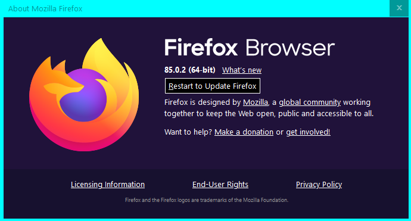
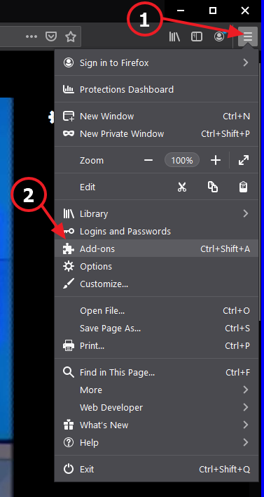
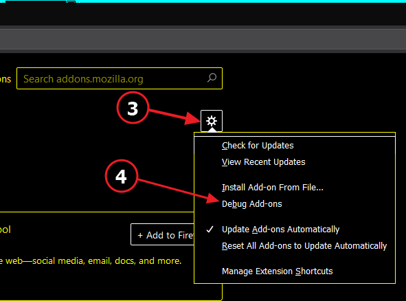
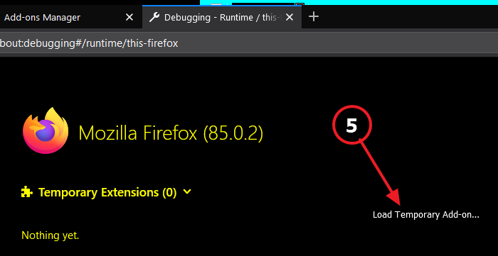
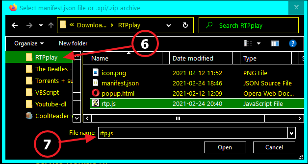
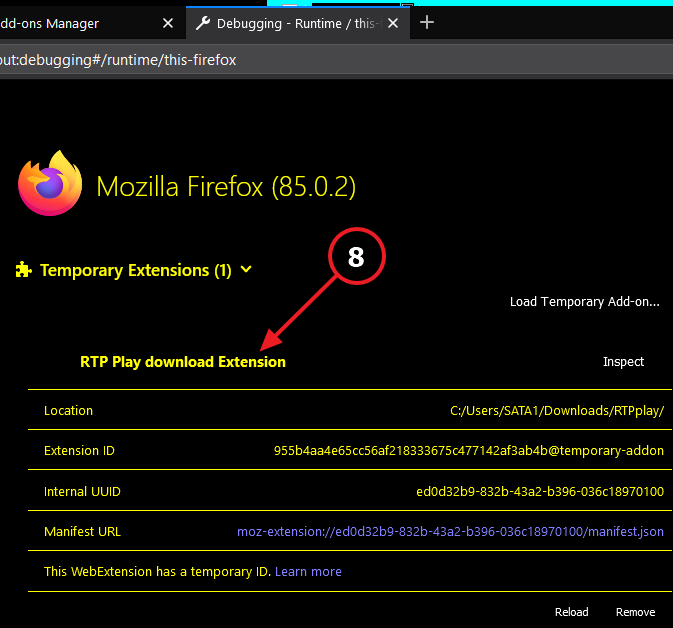
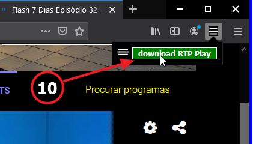
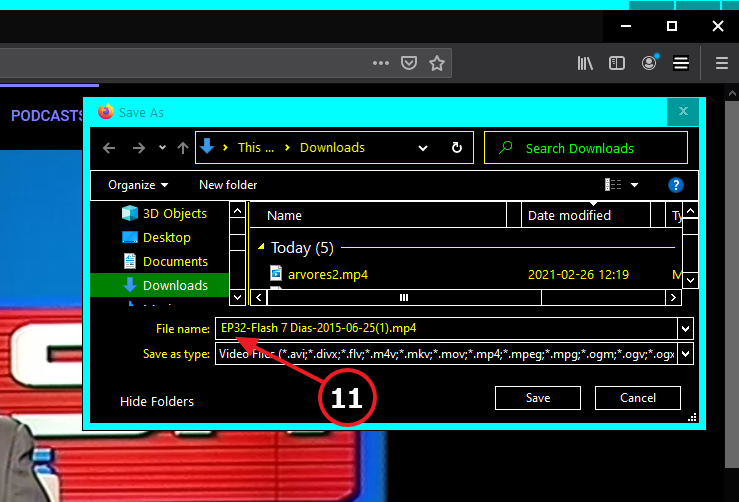

O que funciona hoje pode deixar de funcionar amanhã!
Normalmente adiciona-se uma extensão ao browser (Chrome, Firefox, Opera etc.) indo ao Play Store da Google e clicando em "Instalar".
Este serviço é pago, ter a extensão no Play Store, custa € 5.
O processo grátis, que vai ser usado aqui, é "instalar unpacked".
(a partir do disco rígido do PC).
Passos a seguir: copiar os 4 ficheiros
Um pedido de desculpas: o meu Windows está em english, e high-contrast.
Ter isto em conta quanto à terminologia e às cores das imagens.
- Baixar estes 4 ficheiros, clicando em cada um:
(v1.07 v1.10)v1.11
Excepto icon.png são 3 ficheiros de texto visualisáveis com p.ex. Notepad.
- Criar uma nova pasta, por exemplo RTPplay
-
Mover os 4 ficheiros para dentro da nova pasta:
RTPplay
icon.png
manifest.json
popup.html
rtp.js
exemplo:

{kind=link}
Passos a seguir: instalar a extensão
No Google Chrome ou Opera etc. com pequenas diferenças).No FireFox tem algumas particularidades, seguir esta receita.
Foi testado na última versão do browser (86.0):

- No canto sup. direito clicar (1) nos três tracinhos.
-
No drop down menu clicar (2) en "Add-ons"
 - No novo menu, clicar (3) na roda dentada
e de seguida em "Debug Add-ons" (4)
 - Na página que se abre, clicar (5) em "Load Temporary Add-on",
 - Escolher (6) a pasta com os 4 ficheiros "RTPplay",
Seleccionar um deles (7) (o diálogo diz para escolher "manifest.json"
mas parece que qualquer ficheiro serve)

- A extensão fica instalada (8):

- No caso do Firefox o icon vai logo para junto da barra de extensões (9):

- A partir de agora, clicar no icon
 e de seguida no botão "Download RTP" (10) que aparece, para correr a extensão
e de seguida no botão "Download RTP" (10) que aparece, para correr a extensão

No diálogo "Save as..." que se abre, aceitar (ou alterar) (11) o nome sugerido:

A extensão só funciona em links https://www.rtp.pt/play/etc.
A partir da página "https://www.rtp.pt/play/programas",
testei:
RTP Desporto
RTP1
RTP2
TP3
RTPi América
RTPi Ásia
Academia RTP
RTP Internacional
Originais RTP Play Não tem nada?
RTP Lab Não tem nada?
RTP Criativa Não tem nada?
RTP Memória
RTP Madeira
RTP Açores
RTP África
Zig Zag
Estudo Em Casa
Antena1
Antena2
Antena3
Rádio Zig Zag
RDP Internacional
RDP África
Antena1 Açores
Antena1 Madeira
Antena3 Madeira
Na maior parte a extensão funciona, nalguns casos a implementação do streaming mudou e a captura do URL do vídeo falha.
Mas como a RTP Play está em obras, à medida que a ferramenta deixar de funcionar, p.f. avisem e juntem o link da página em falta.
Obrigado pela vossa atenção!
Rec